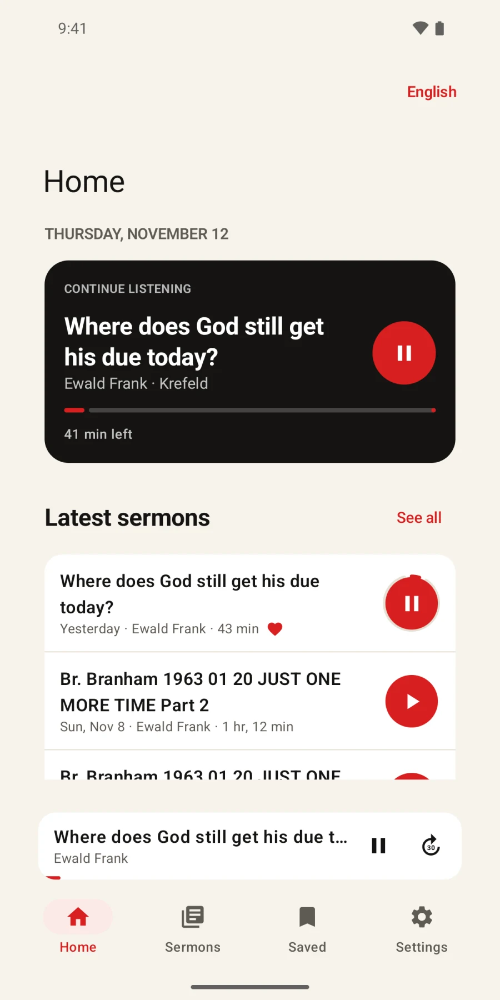
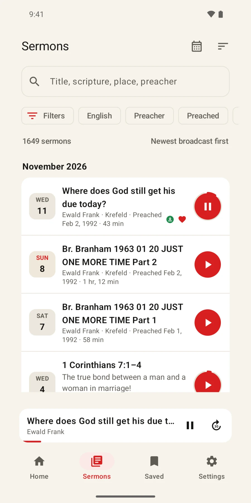
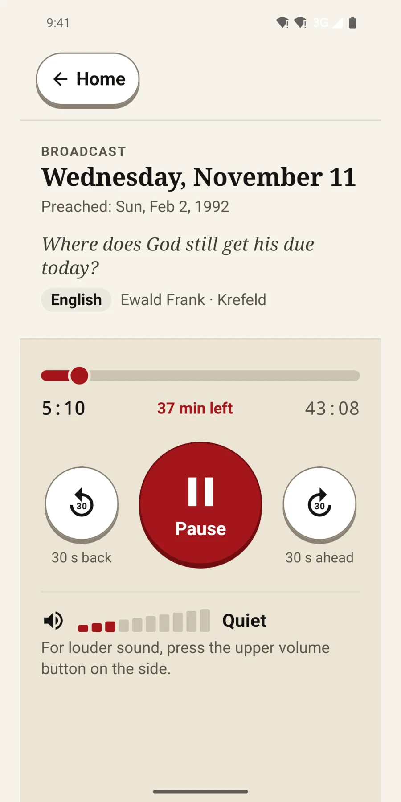

Misia Wordcast
Počúvajte kázne Misie vo vybraných jazykoch. Stiahnite si nahrávky na počúvanie bez internetu a vyberte si štandardný alebo jednoduchý režim.
Chcete vedieť, keď vyjde ďalšia verzia tejto aplikácie?
Dostávať novinky o aplikáciách e-mailomApp Store
Stiahnuť zadarmoAndroid
Pomôžte nám vydať aplikáciu v Google Play. Vyskúšajte ju a povedzte nám, čo funguje a čo môžeme zlepšiť.
Získať aplikáciu pre Android
-
Pridajte sa do skupiny testerov
Do skupiny sa môže pridať každý. Otvorte jej stránku, prihláste sa účtom, ktorý používate v Obchode Play, a vyberte Pridať sa do skupiny. Ak už ste členom, prejdite na druhý krok.
Otvoriť skupinu testerov -
Zapojte sa do testu a nainštalujte aplikáciu
Vráťte sa sem. Otvorte test v Google Play s tým istým účtom, potvrďte účasť a nainštalujte aplikáciu z Obchodu Play. Pomôže nám, ak ju vyskúšate a zostanete v teste aspoň 14 dní.
Otvoriť test v Google Play
Chcete aplikáciu používať bez zapojenia do testu? Stiahnite si APK priamo.
Verzia 1.1 (2) · Android 8.0 alebo novší
Otvorte stiahnutý súbor APK. Ak vás Android vyzve, povoľte inštaláciu z prehliadača.
- Vyhľadávajte v knižnici kázní, filtrujte podľa jazyka a dátumu a prezerajte si kalendár vysielania.
- Počúvajte na pozadí, pokračujte tam, kde ste prestali, upravte rýchlosť prehrávania alebo nastavte časovač vypnutia.
- Sťahujte nahrávky, ukladajte si obľúbené kázne a usporiadajte ich do zbierok. Čítajte dostupné prepisy.
- V jednoduchom režime nájdete väčšie tlačidlá prehrávača a kázne zoradené podľa dátumu.
Snímky obrazovky





